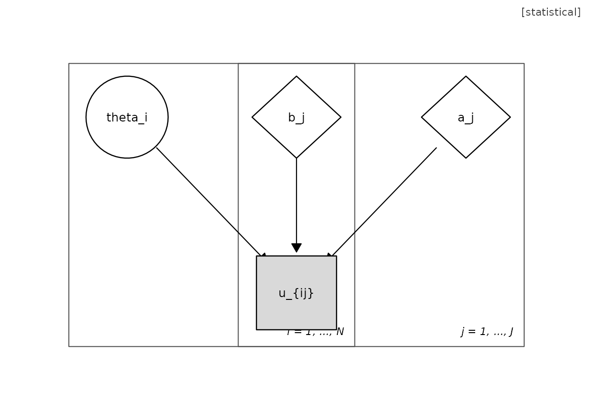
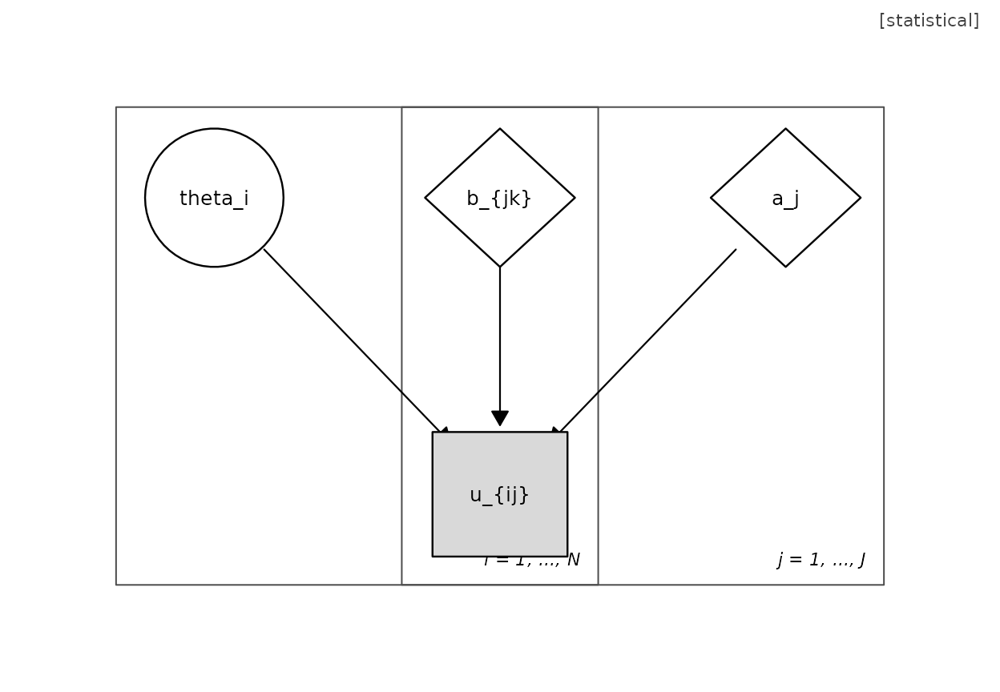
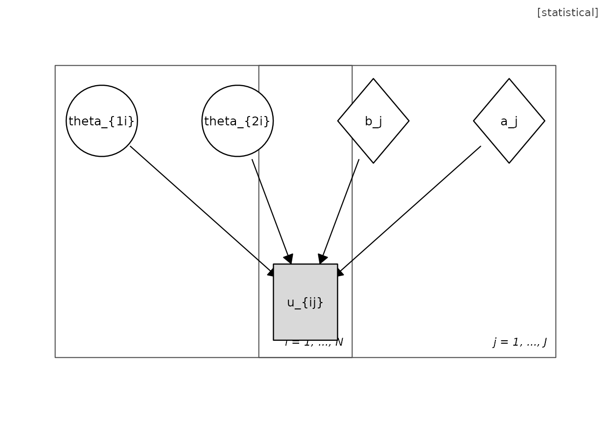
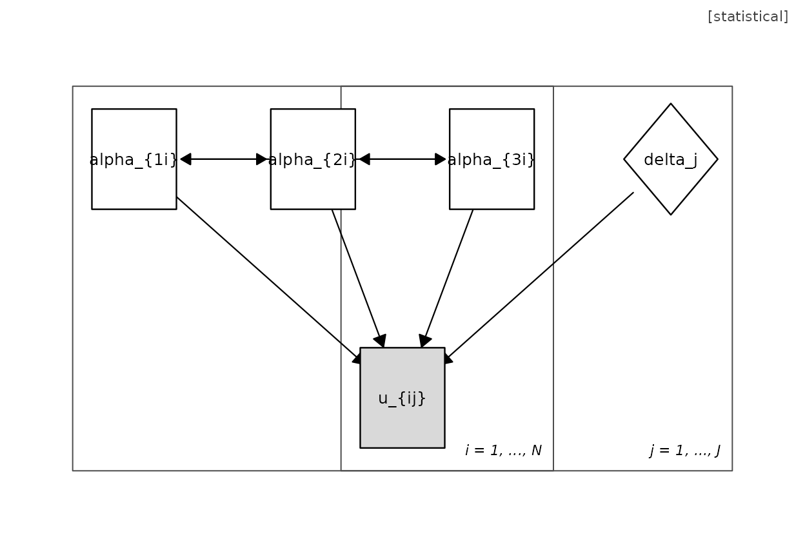
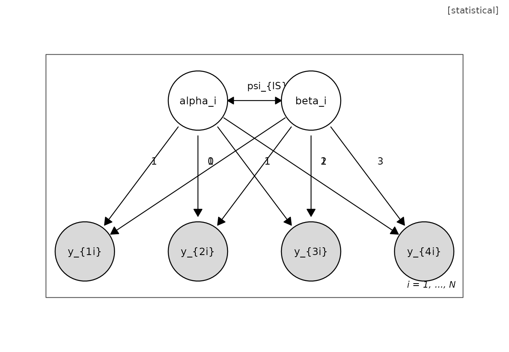
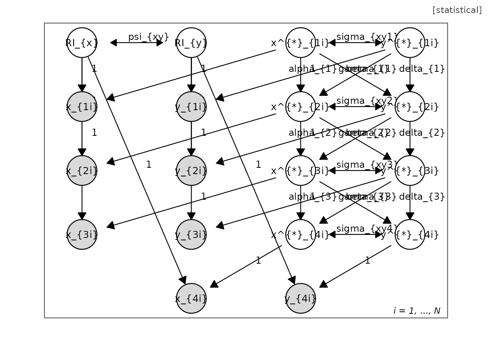
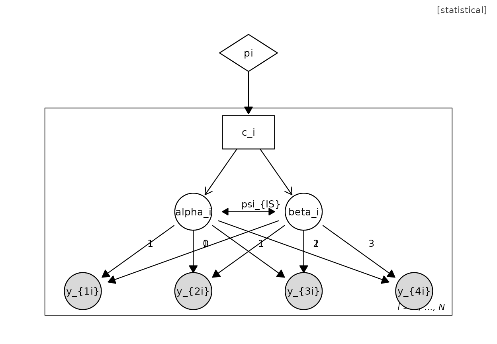
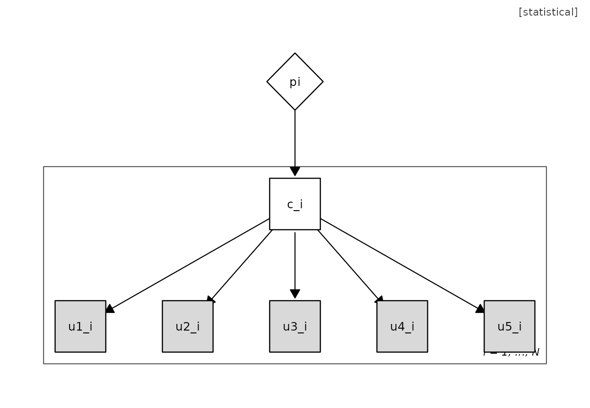
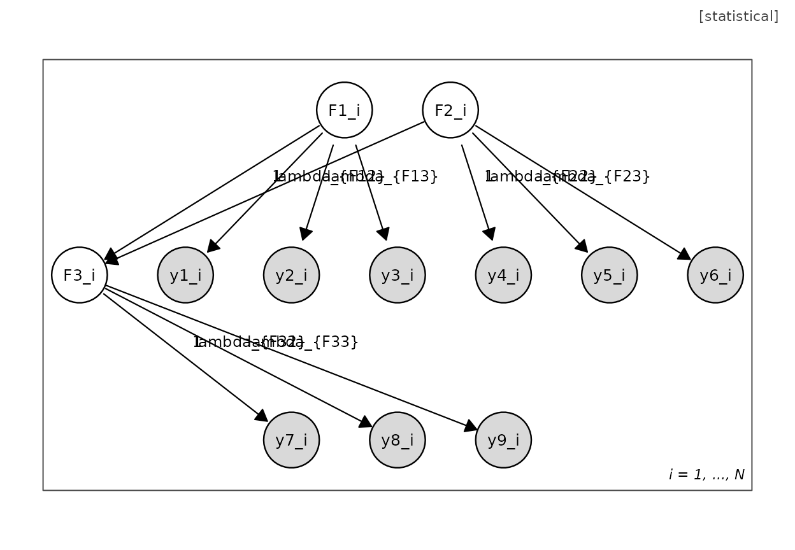
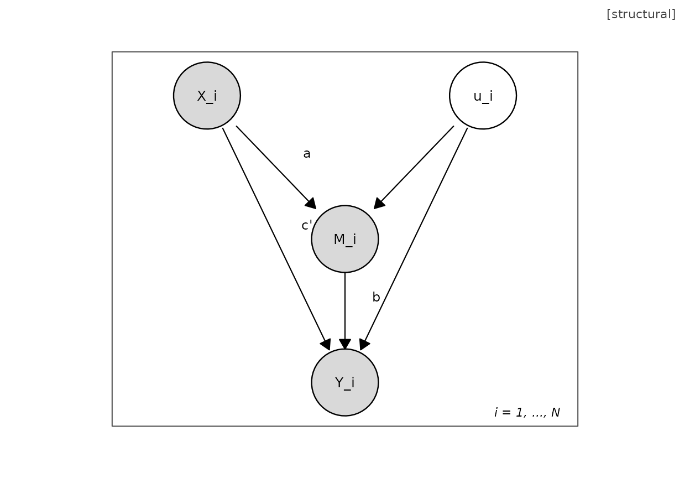

A Gallery of Model Families in the UMG Grammar
Hsiu-Ting Yu
2026-09-28
Source:vignettes/umg-gallery.Rmd
umg-gallery.RmdEach model below is one line of code. The point of the gallery is
that adopting the grammar for a new model is a matter of editing a near
neighbour rather than starting from the definition. Every builder
returns a umg object that passes
umg_validate() by construction and can be re-rendered with
plot(), umg_ggplot(),
umg_to_tikz(), or umg_to_dot().
Item response models



The diagnostic classification model combines latent categorical attributes with the crossed-plate measurement structure:

Hierarchy, growth, and longitudinal models
plot(umg_growth(4))
plot(umg_riclpm(waves = 4)) # random-intercept cross-lagged panel
Mixtures
A growth mixture model is the composition of a growth motif and a mixture wrapper:
plot(umg_mixture(umg_growth(4), targets = c("I", "S")))

General SEM assembler
When no single-purpose motif fits, assemble a model from a measurement and a structural specification:
m <- umg_sem(
measurement = list(F1 = paste0("y", 1:3),
F2 = paste0("y", 4:6),
F3 = paste0("y", 7:9)),
structural = list(c("F1", "F3"), c("F2", "F3"))
)
plot(m)
Causal license: the badge
plot(umg_mediation(confounder = TRUE, badge = "structural"))